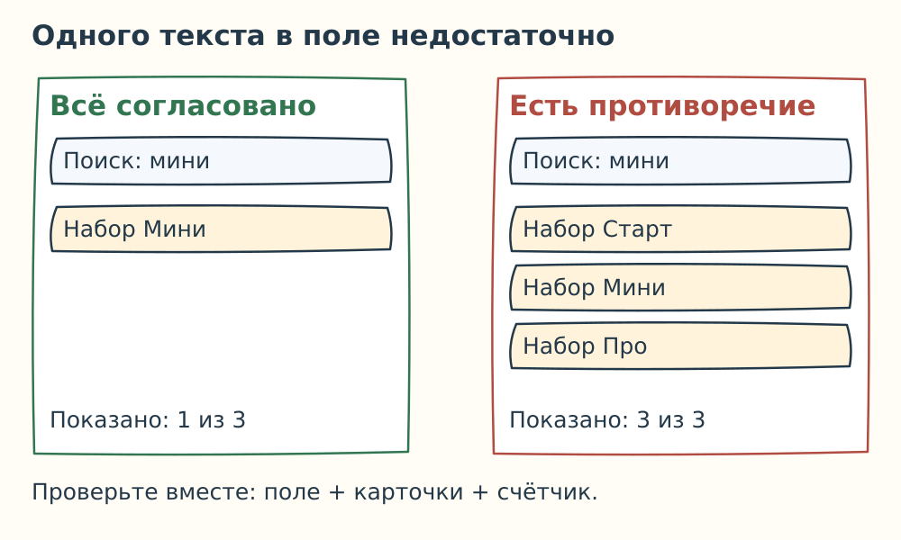
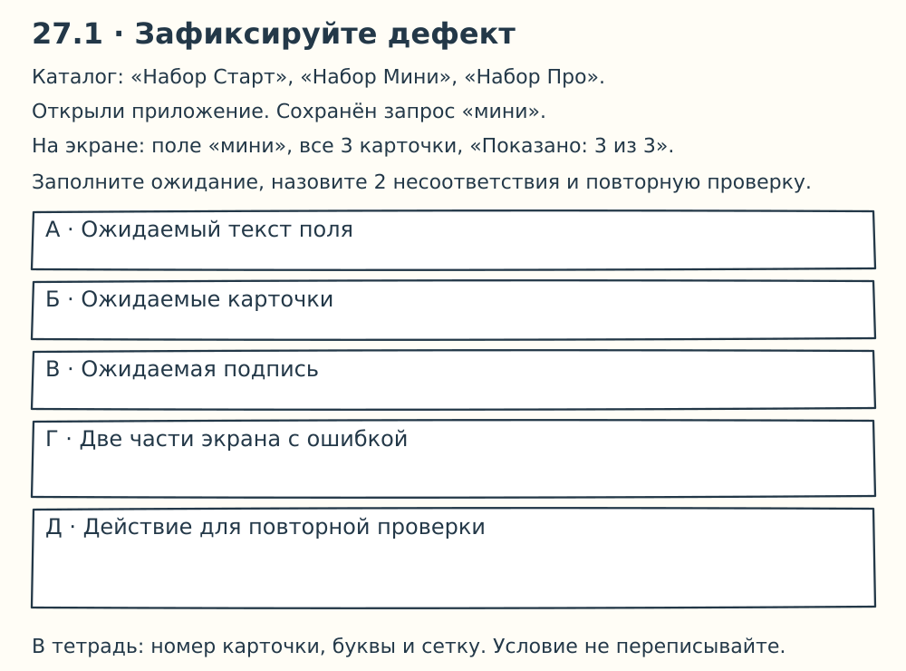
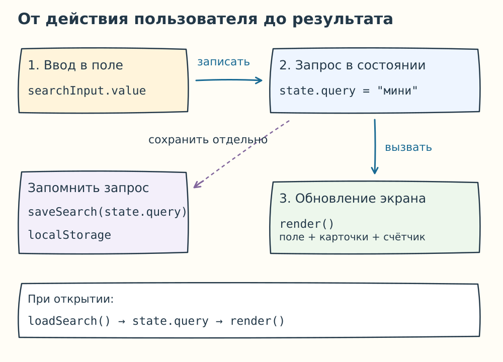
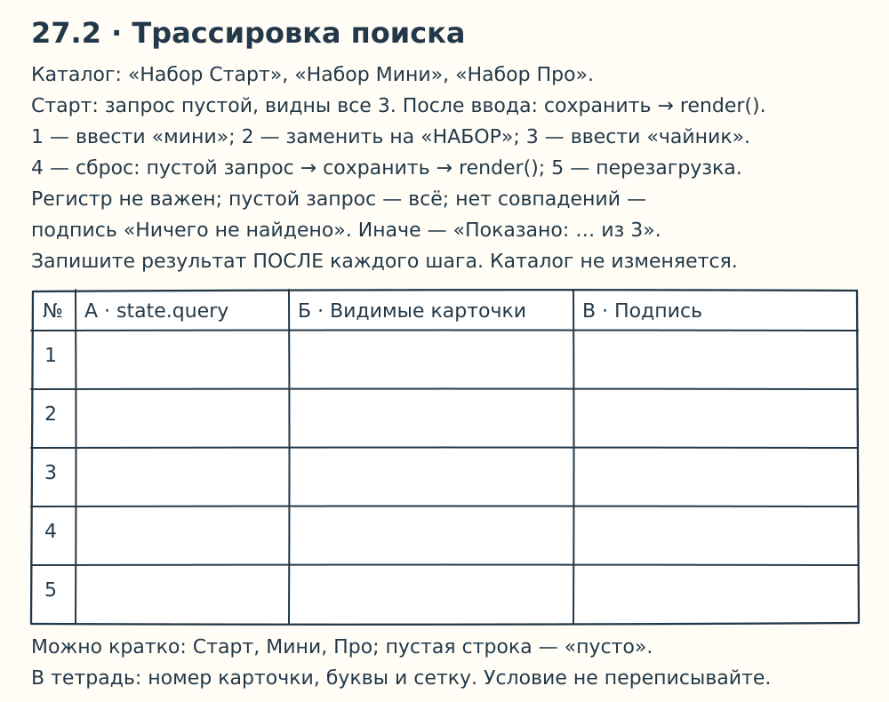
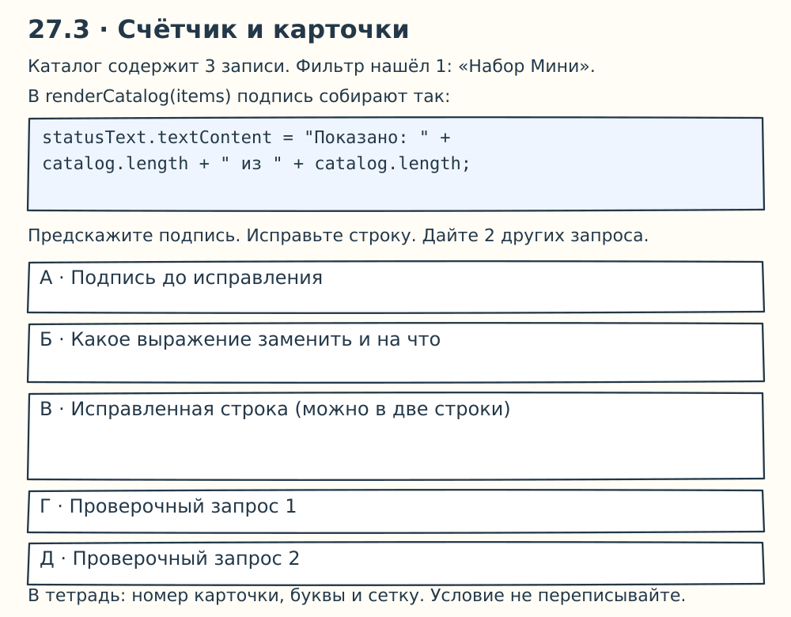
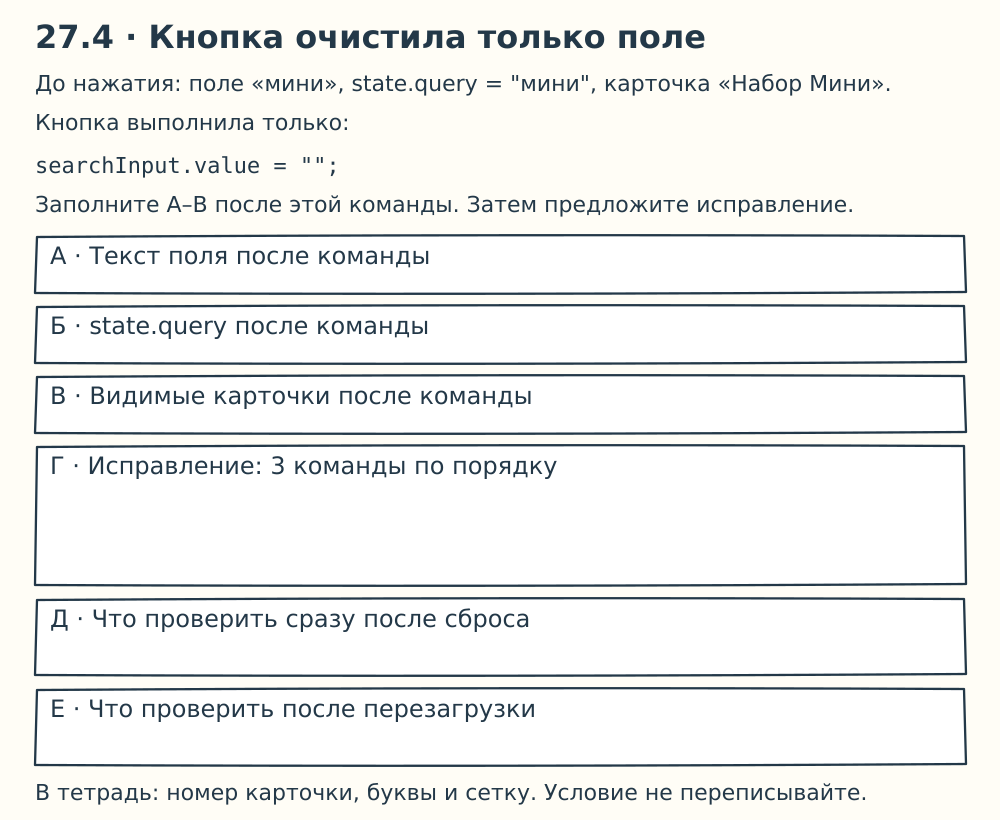
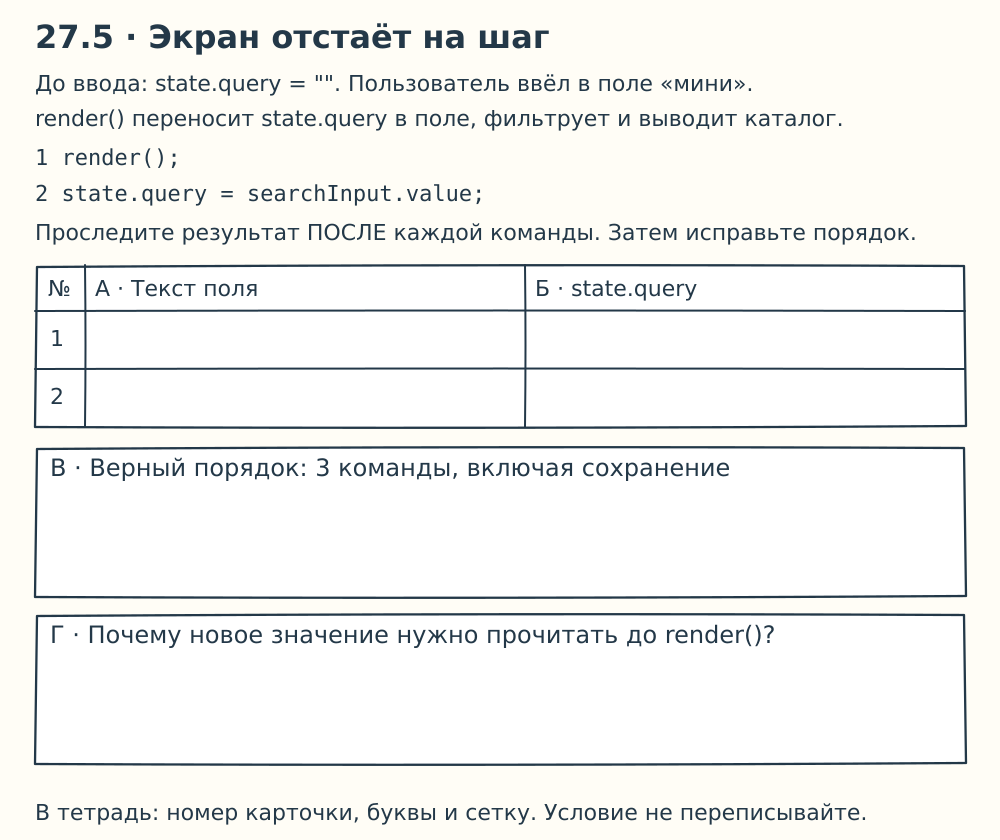
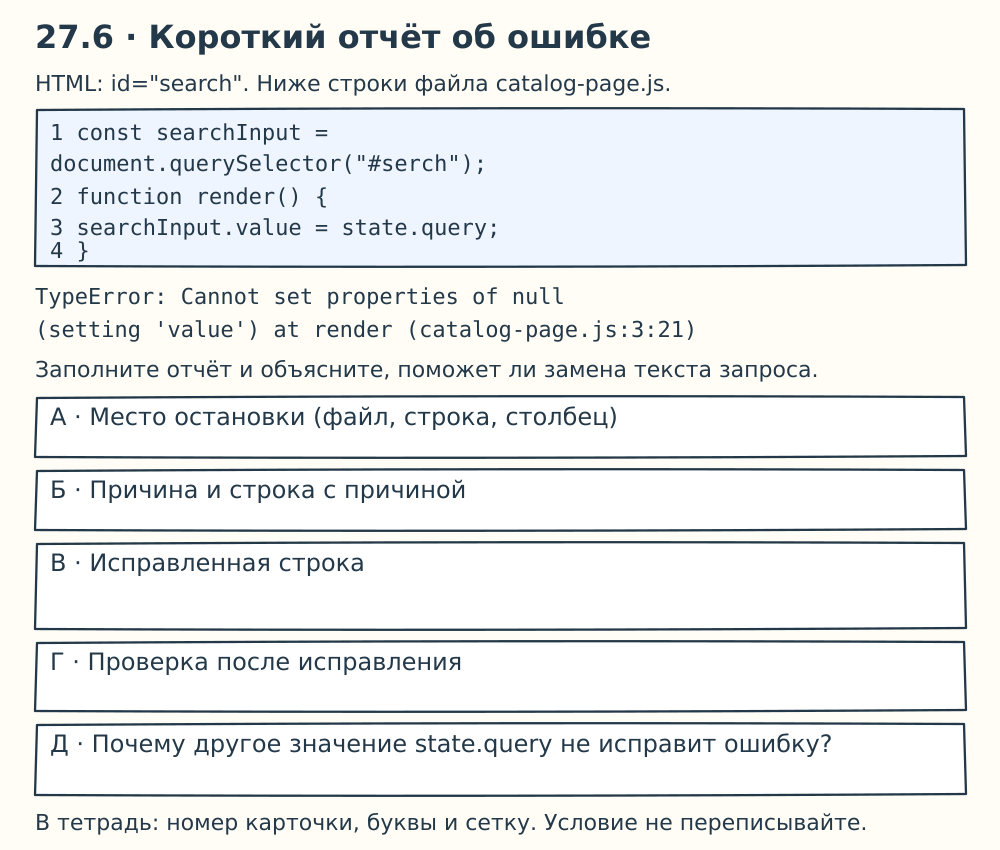
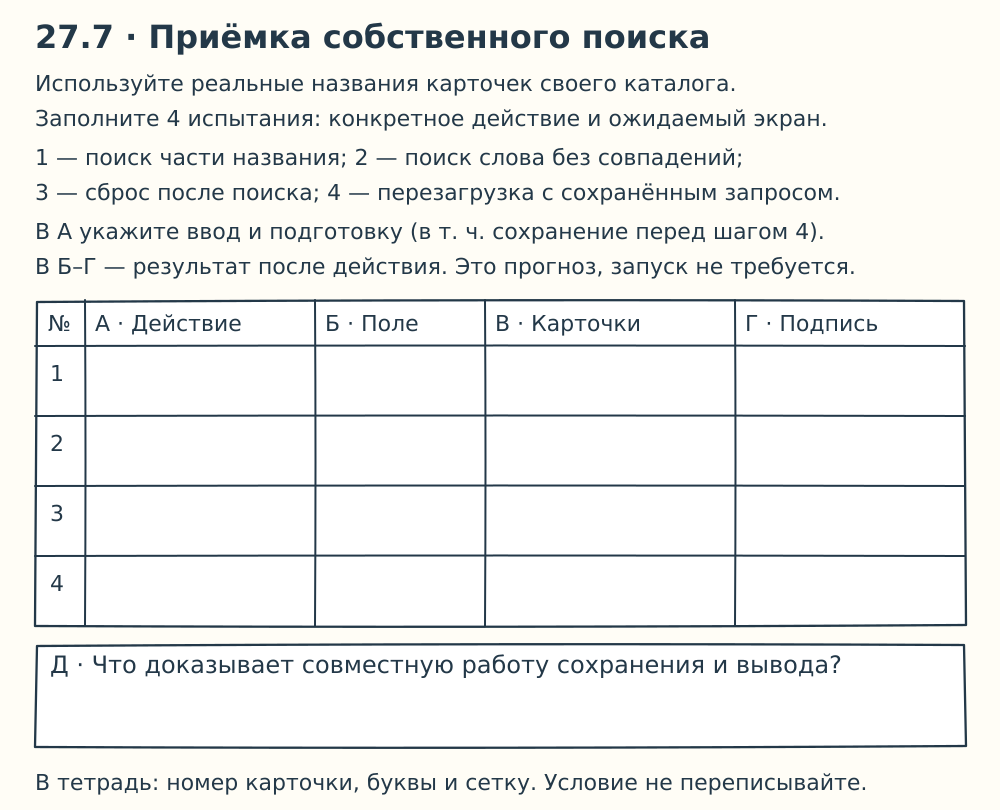

Соединение интерфейса и логики: поиск, экран и поиск ошибок
Приложение запомнило запрос мини. После открытия слово появилось в поле, но на экране остались все три карточки. Пользователь видит противоречие: поле обещает поиск, а каталог его не выполняет.
В предыдущей части вы разобрали сохранение запроса. Теперь свяжем данные с экраном и научимся проверять всю цепочку действий.
1. Один запрос — три согласованных результата
Продолжаем общий пример: «Набор Старт», «Набор Мини», «Набор Про». Слово мини должно дать:
- в поле —
мини; - в каталоге — только «Набор Мини»;
- в подписи — «Показано: 1 из 3».
Если изменилось только поле, работа не закончена. Программное присваивание searchInput.value = "мини" само не вызывает обработчик input. Нужно явно запустить отбор и вывод.


Открыть карточку на весь экран

2. Данные, из которых получается экран
Состояние — данные о том, что сейчас выбрано в приложении. Для нашей задачи достаточно одного изменяемого значения:
const state = { query: "" };
query — запрос. Полный список catalog остаётся прежним массивом из пары 25. Видимые карточки мы вычисляем из него и запроса. Их количество тоже вычисляем, а не храним отдельно.
Например, состояние { query: "про" } означает: в поле нужен текст про, из каталога подходит «Набор Про», подпись сообщает об одной карточке из трёх.
3. Один вызов обновляет весь экран
Функцию общего обновления назовём render. Она использует знакомые filterByText и renderCatalog из пары 25:
function render() {
searchInput.value = state.query;
const visible = filterByText(catalog, state.query);
renderCatalog(visible);
}
Первая строка обновляет поле. Вторая получает подходящие записи. Третья показывает карточки и их счётчик: это уже умеет renderCatalog.
Новый обработчик ввода записывает запрос, сохраняет его и запускает общее обновление:
state.query = searchInput.value;
saveSearch(state.query);
render();
saveSearch — сохранение настройки из предыдущей части. Если оно не удалось, поиск на текущей странице всё равно должен работать. render меняет экран, а сохранение записывает данные для следующего открытия — это разные задачи.

При открытии страницы сначала возвращаем запрос, затем рисуем экран:
state.query = loadSearch();
render();
loadSearch возвращает строку запроса либо пустую строку при отсутствии подходящей настройки. Поэтому первый показ сразу соответствует восстановленным данным.

Открыть карточку на весь экран

4. Исправьте три поломки
Для каждого случая используйте порядок: воспроизвести → найти причину → изменить → проверить. Сначала запишите прогноз, затем сравните его с результатом общего разбора.

Открыть карточку на весь экран


Открыть карточку на весь экран


Открыть карточку на весь экран

5. Если программа остановилась
Ошибка выполнения отличается от неверного счётчика: часть команд вообще перестаёт выполняться. Сообщение подсказывает место остановки, но причина может находиться раньше.
Для чтения примера слева условно пронумерованы строки:
1 const searchInput = document.querySelector("#serch");
2 function render() {
3 searchInput.value = state.query;
4 }
В HTML поле имеет id="search". Консоль сообщает:
TypeError: Cannot set properties of null (setting 'value')
at render (catalog-page.js:3:21)
null здесь означает, что поиск элемента ничего не нашёл. catalog-page.js:3:21 — имя файла, строка и столбец, где выполнение остановилось. В строке 3 уже используют результат поиска; причину нужно проверить в строке 1.

Открыть карточку на весь экран

7. Проверка общего каталога

Открыть карточку на весь экран

Поменяйтесь тетрадями. Попробуйте выполнить чужую проверку мысленно. Если непонятно, что вводить или что должно получиться, уточните условие проверки.
Что вы теперь умеете объяснять
По одной пользовательской задаче вы прошли весь путь: запрос → сохранение → восстановление → отбор → карточки и счётчик. На бумаге можно проверить порядок и ожидаемые значения. За компьютером затем нужно подтвердить, что настоящая программа делает именно это.